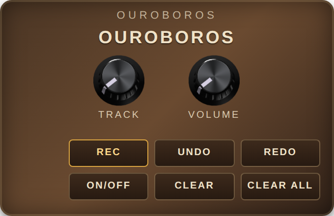

For MOD Dwarf and MOD Desktop. No click, no bars: the first loop you record sets the length, and the other three tracks lock to it.
| Control | What it does (footswitches B and C and all three knobs act on the selected track) |
|---|---|
| Knob 1: Track | Picks track 1 to 4. It does not touch the sound; it chooses what B, C and the other knobs act on. |
| Knob 2: On/Off | Press the knob to mute or unmute the selected track. A muted track keeps running in time. |
| Knob 3: Volume | Playback level of the selected track, −60 to +6 dB, default 0 dB. It never changes what is recorded, so undo stays exact. |
The web pedal has the same actions as buttons, plus STOP/PLAY (stops with the Stop Mode, or starts again from the top), CLEAR (selected track) and CLEAR ALL.
| Track is | Press B | Shows |
|---|---|---|
| Empty | starts recording | REC |
| Recording | closes it, plays | PLAY |
| Playing | starts overdubbing | DUB |
| Overdubbing | back to playing | PLAY |
| Stopped | starts every track again from the top | PLAY |
| Auto Rec on, track empty | arms it: recording starts on your first note | ARM |
An arm is cancelled by B on the armed track, a tap on C, a stop, Clear on the armed track, Clear All, or turning Auto Rec off. B on another track cancels the arm and then does that track’s own action.
Set After Rec to Rec > Dub to go from recording straight into overdubbing. The light shows the track’s state: white empty, blinking red recording, blinking green overdubbing, green playing, slowly blinking red armed, and off while stopped.
One-press handover. Press B on another track while one is recording: the running one closes and the new one starts, in the same press. This is how you set the loop length from track 1 and start track 2 without a gap.
Long tracks. Record a track over an existing loop and keep playing past the loop end: it becomes 2, 3 or more loops long, up to 5 minutes. Press B to stop recording. The length rounds to whole loops, counted from when you started that track. Press within a quarter loop after a whole number of loops and it rounds down: what you played past that point lands on top of the track’s beginning, where it falls in time. Press later and it rounds up, and the rest of the last loop is silent. Less than one loop gives one loop. A long track stays locked to the first loop. Overdub, undo and redo, on/off, volume and clear work over its whole length. Restart (B, or a double-tap on C while stopped) begins the longest track from its start, and every other track keeps its alignment.
| Gesture | Effect |
|---|---|
| Tap | Undo the newest layer, a moment after you lift your foot (the double-tap window). The label reads - when there is nothing to undo. Keep tapping to peel layers down to the first recording; undoing that empties the track. Tapping works while stopped too; leave a moment between taps to undo several layers. |
| Hold | Redo the layer you just undid. It fires as soon as you pass the hold time, with your foot still down. |
| Double-tap | While playing, stops every track (see Stop Mode). While stopped, starts every track again from the top, like B. |
| Hold while stopped | Does not redo. Keep holding to twice the hold time to clear everything, including the loop length. You cannot undo this. |
| Undo while overdubbing | Cancels the overdub and plays on. |
| Undo during the first recording | Aborts it. The track is empty again. |
| Double-tap during the first recording | Keeps it as the loop, but stops silently, whatever the Stop Mode. Press B to hear it from the top. |
One overdub is one layer, however many passes it ran. Overdubs where you played nothing are dropped, so they cost no undo step. Recording or overdubbing again forgets what you could still redo.
Ouroboros outputs only the loops. Your live sound is not passed through, so run the dry signal around the pedal on the pedalboard (a parallel path) and mix the two. If you run the pedal in series instead, switch Dry thru on and it adds your input to the output with no delay. Bypass mutes the loops, but they keep running in time and pick up where they are when you switch back on. While bypassed you get the dry signal only if Dry thru is on.
The loop point is click-free, and a note still ringing when you close the loop carries into the next pass. The first loop can be up to 5 minutes. Loops are not saved with the pedalboard. Each track’s on/off and volume are also in the web interface (On 1–4, Volume 1–4).
Ouroboros offers a Loop display widget. In Starless’ Display dialog, put it in the column above knob 1; it replaces knob 1’s own text and keeps the footswitch labels visible. It shows the selected track and its state (ARM when that track is armed), a mark per track (a blinking dot for an armed track), and a bar that fills once per pass (elapsed time during the first recording). For a long track the bar covers the whole track, with a small tick at each loop (left out when there are too many), and while a track records past the loop, small dots show how many loops are recorded so far. It needs an area at least 24 pixels tall for the full layout; a shorter area shows the bar only. While stopped it shows STOP (blinking while a stop is still finishing), and B’s label reads PLAY. Without the widget everything still works, just without the screen. On stock MOD OS the volume knob can be one step off right after you change track.
| Setting | Range | Default | What it does |
|---|---|---|---|
| After Rec | Play / Dub | Rec>Play | What closing a first recording leads to. |
| Dry Thru | off / on | off | Adds your dry input to the output, for series use. |
| Tail | 0–500 ms | 50 ms | Ring-out after closing the first loop, blended into its start. Even at 0 it is a short 3 ms crossfade, so the loop point never clicks. Too long can double the first note. |
| Hold Time | 200–2000 ms | 500 ms | How long to hold C before it counts as redo instead of undo. Twice this, held while stopped, clears everything. |
| Undo Budget | 16–400 MB | 200 MB | Memory for undo history. When it runs out the oldest layers stay in the loop but can no longer be undone. |
| Overdub earlier by | 0–30 ms | 0 ms | Writes overdubs a little earlier. Raise it if your overdubs land slightly late. |
| Trigger Latency | 0–50 ms | 3 ms | Backs the start of a recording up to make up for the late footswitch press, so the first attack is kept. |
| Stop Mode | Instant / End of loop / Fade | Instant | How a double-tap on C stops: at once, at the end of the pass (End of loop waits for the longest track to finish its pass, which can take a while; STOP blinks meanwhile), or with a fade. A second double-tap during End of loop or Fade stops at once. B during one of these cancels the stop. |
| Fade Time | 0.5–10 s | 3 s | How long the Fade stop takes. |
| Auto Rec | off / on | off | B on an empty track arms it instead of recording. Recording starts when you play past the Threshold, and keeps the 10 ms before it. |
| Threshold | −60…−10 dB | −40 dB | How loud your first note must be to start an armed recording. |
| Double-Tap | 150–600 ms | 400 ms | The window for a second tap on C. A single tap undoes once it has passed. |